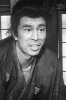

Also known as:座頭市御用旅 (original title)
Country:Japan, 88 minutes
Spoken languages:Japanese
Genres:Adventure, Action, Drama
Director(s):Kazuo Mori
Writer(s):Kinya Naoi
Video Codec:Unknown
Number: 2839


Certification:
Storyline:
Blind masseur and master swordsman Zatoichi finds a robbed and fatally wounded pregnant woman, whose baby he delivers before she dies. He takes the baby in search of its father and finds the child's aunt, who is about to be forced into prostitution for want of a payment the dead mother was bringing. Zatoichi determines to save the woman from her cruel fate.
Cast: 


Medium: Bluray,
Comments: Part of: Zatoichi - The Blind Swordsman collection
Loaned: No
Aspect ratio: Unknown